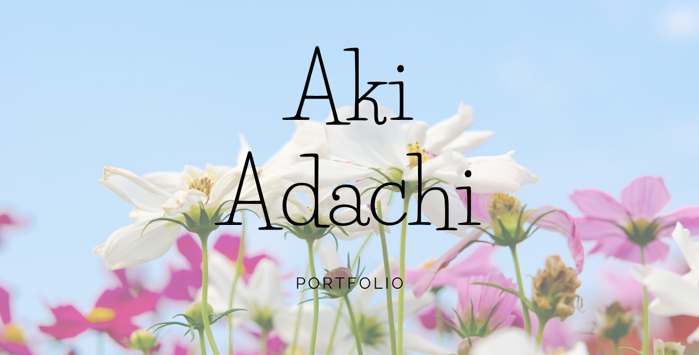
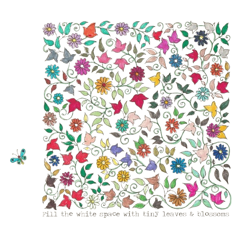
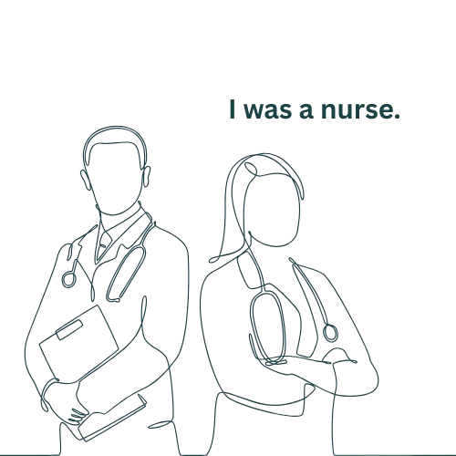
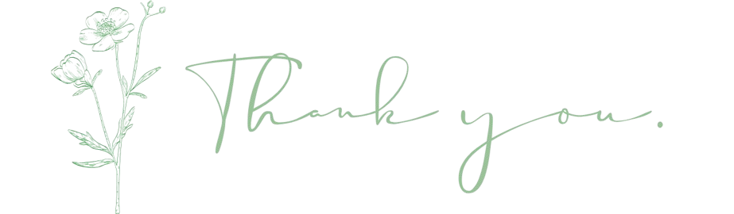

Profile

基本情報
- 名前
- 安達 亜希
- 血液型
- O型
- 趣味・特技
- ・ピアノを弾く
・甘いものを食べる
・絵を描く
←私が塗った絵です
自己紹介
性格
看護師として約13年従事してきたため、責任感が強く任された仕事は計画的に目標をもって正確に行う。
またコミュニケーションスキルが培われ、誰とでも分け隔てなく接し、常に人を尊重する気持ちをもって関わる。
人の相談役(健康相談なども含め)、聞き役となることも多く、チーム連携や仲介役になることが多い。
常に向上心を持ち、現在はプログラミングの学校に通いながら、保育士の資格を独学で勉強し試験合格となる。
長所
- ・コミュニケーション能力が高い
- ・人当たりが良い
- ・責任感が強い
- ・マルチタスクが得意
- ・タイムパフォーマンス重視
- ・チーム連携力がある
- ・誰にでも敬意をもって関わる
短所
- ・八方美人
- ・人を信頼することが苦手
- ・気が散りやすい
- ・一人で何でも解決しようとする
資格
- H23 看護師免許
- H26 普通自動車第一種免許
- R7 保育士免許(試験合格し、申請中)
- R7 ITパスポート(8月取得予定)
- R7 HTML試験レベル1(9月取得予定)
職業訓練校で
身に着けたスキル
- ・HTML
- ・CSS
- ・JavaScript
- ・PHP
Career
職務経歴
・看護師として大学病院から個人クリニック、老人ホームなど多岐に渡り就業。
（急性期外科・内科病棟、回復期病棟、療養、透析室を経験。）
・コロナ渦はコロナ患者受け入れ病院で働き、最前線で仕事をこなす。
・リーダー業務を任されることが多く、医師・他職種や地域との連携役、後輩の指導役、上司（主任や師長）への仲介役などを行う。
・300床ある救急受け入れ病院では、現役医師兼理事長に信頼され、回診や処置の担当として役割を担う。
その業績が認められ、給与やボーナスなどが反映されたことあり。

経験したこと、培ったこと
- ・コミュニケーションスキル
- ・責任感
- ・リーダー業務
- ・緊急時などの冷静な対応
- ・チーム連携能力
- ・多職種や上司・部下の連携
- ・マルチタスクの中優先順位を考え行動する
- ・急病人の対応や健康相談役などができる
- ・人、命を尊重する気持ち
看護師から別世界への挑戦
10年以上の社会人・看護師としての経験を経て知識や技術を一通り身に着け、思い切ってキャリアチェンジをしようと決断。
もともと好きだったパソコンの操作や機械、自分の色覚を生かしたデザインを扱える仕事に就きたいと考え、そのためのスキルを身に着けるためにプログラミング科の職業訓練校へ入校。
学生という貴重な時間を有効活用するため、保育士資格の勉強を独学で並行して行い試験合格。（合格率20~30％）
常に向上心、挑戦する姿勢を大切にしている。
Works
職業訓練校プログラミング科 在籍中作品
幼児むけツール
取得した保育士の資格と、訓練校で学んだプログラミングの知識を活かし、幼児向けのツールをAIを活用し制作。
保護者様などへの大人向けのサイトと、幼児向けのサイトに分けて8種類のツールを載せました。
ぜひご覧ください。
製作日数：3日間
制作時間：約15時間
趣味の絵や写真
Contact
※準備中です
ポートフォリオのソースコードはこちら